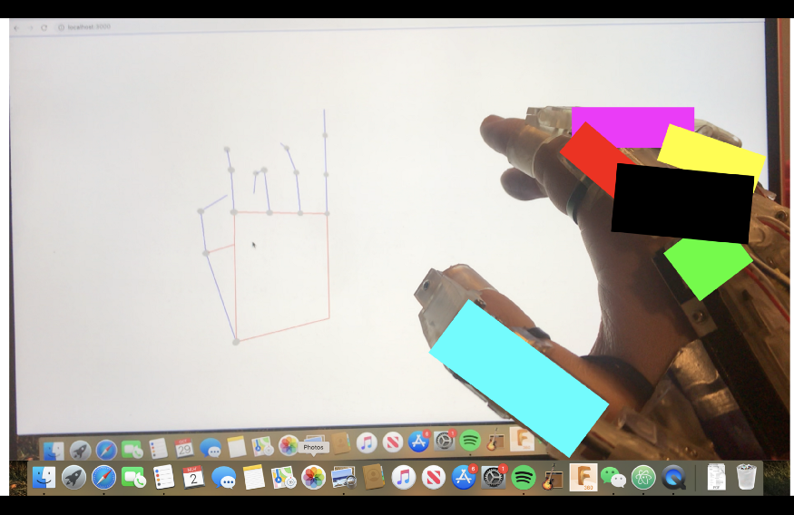

What we're building
16 December 2020

At TeleX Robotics, we’re building several things, all of which will work together to create an experience we’ve been internally referring to as Tony Stark’s holographic workspace. Normally, startups have to make their own VFX-laden videos to demonstrate their not-yet built technology. Thankfully for our bank account, the filmmakers over at Disney have
taken care of that step for us. I analyze this video in depth in
another article.
As the linked YouTube video may suggest, what we’re interested in is a virtual makerspace that allows users to create, manage, and manipulate 3D models as if they existed in physical reality. There are a few key components shown in this scene: 1) a holographic display of 3D information, 2) a program, powering the hologram, that allows for the storage and manipulation of 3D files, and 3) an interface between humans and the program. From our perspective, these are the primary elements of a virtual makerspace.
The first component, the display, has already attracted quite a bit of commercial attention in the form of XR (extended reality, e.g. AR, VR) headsets. While holograms are visually and cinematically appealing, they’re not entirely practical when it comes to ensuring widespread adoption of XR technology. Whether or not there are improvements to be made in the XR display industry (there are), this is not where we are investing our efforts. There are many established players making headsets today—Oculus, Vive, Microsoft—and gaining a competitive advantage would require significant capital investment. But that’s besides the point.
Where we’ve decided to focus our attention is on components 2 and 3, the software and the interface. Working in this space is desirable to us for a few reasons: there are very few existing products, none of which function how we’d like them to (opportunity); computational and manufacturing resources are just now reaching the point where the creation of the necessary software and hardware is feasible (means); and, finally, this field is particularly interesting to us, given our backgrounds as physicists, computer scientists, and engineers (motive).
Component 2, the software which powers the virtual makerspace, is complex. Really complex. It’s going to require us to build from the ground up a 3D modeling program replete with version control, multi-user functionality, and advanced real-time rendering tools. When all that is done, we’ll still have to build a multiphysics simulation engine, the likes of which has never been built before. Moreover, our 3D modeling software is going to be unlike any other on the market today. We’re throwing away the assumption that 3D modeling is done with a keyboard and mouse (a la Solidworks, Rhino, etc.) or a clunky VR controller (Z Brush). Instead, we’re going to consider, from the most fundamental standpoint, what it means for humans to interact with virtual worlds. Enter, component 3.
Interfaces with virtual 3D worlds haven’t been given much consideration so far, primarily because the existence of virtual reality is relatively new, and that much of the early efforts in the field were focused on building display devices. The interface that dominates the market today is essentially an upgraded Wii-mote: it’s a stick with a trigger on it. In most XR applications, menu navigation is performed by pointing and clicking. In some video games, users see a virtual hand in place of the stick controller, where the opening and closing of the hand corresponds with the pulling and releasing of the trigger. Essentially, this is a transcription of mouse functionality to 3D space—users can move a cursor in space and perform click-type operations.
For simple applications—web browsing, watching Netflix—this type of interface is fine. There are additionally a handful of video games that have achieved great popularity on VR platforms. Beat Saber, for instance, has users chopping colorful blocks with lightsabers emanating from their controllers. This application feels natural to use simply because holding a stick-shaped controller evokes the same sensation as holding a lightsaber. Similarly, the video game Superhot—in which users shoot bad guys with guns, among other weapons—feels natural because holding the trigger-based controller is indistinguishable from holding a real gun. These applications are successful because they are convincing. Because the interface enables seamless usage of the program.
Along these lines, a necessary part of enabling more complex programs (3D modeling, in our case) is an interface suited to the task. In 3D modeling applications, users will need the ability to precisely manipulate virtual objects. To get a sense of the complexity required from such an interface, consider trying to twirl a pen in your hand. Certainly, you’ve done it before. You might not have given it much thought, but dexterous manipulation of objects—rotating them, translating them—engages over twenty muscles in your hands. Achieving this level of control with a stick-and-button-type controller would be incredibly challenging. A much more elegant solution is to simply import the users hands into XR, and to export tactile and force sensations to the users hands.
What we’re referring to, but haven’t yet named, is a haptic glove. If you work in the XR space, you’re probably familiar with the concept. If not, check out this video. What we’re building is a glove that tracks the user’s hands and provides them with detailed tactile and force feedback. This type of interface, coupled with well-designed software, will make interacting with virtual worlds indistinguishable from interacting with our physical world. Such seamless interaction, and only this type of interaction, will enable the virtual makerspace we envision.
If any of this reads as science fiction, fine. We’re aware that what we’re building is a moonshot. This article is just a starting point, outlining our highest level goals. Over the coming months and years, we’ll publish additional articles that tackle each of these idea one by one, in as much depth as it takes to convince both ourselves and the outside world that we’re on the right track.